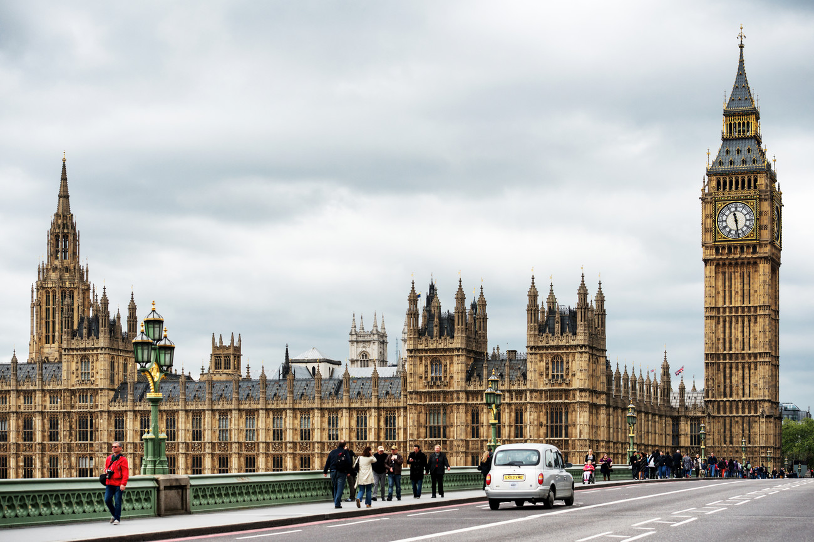
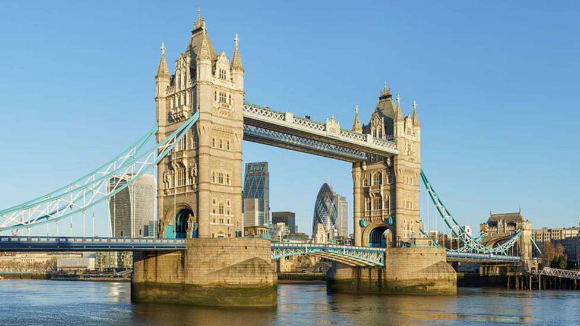
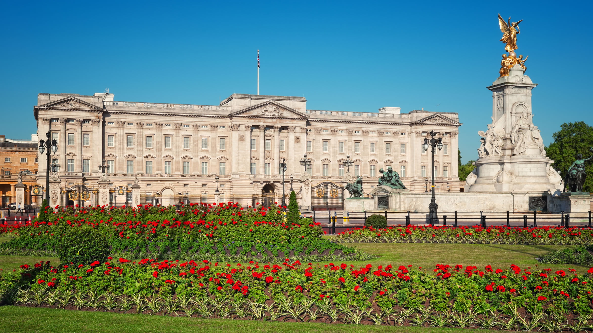
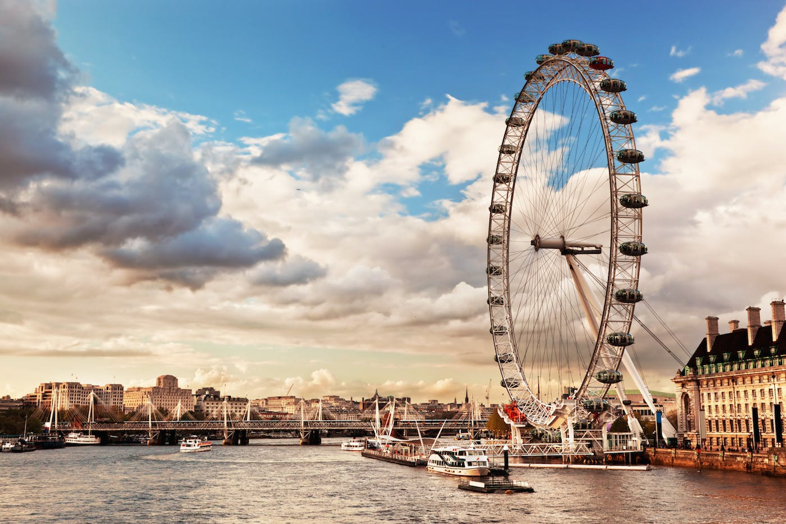
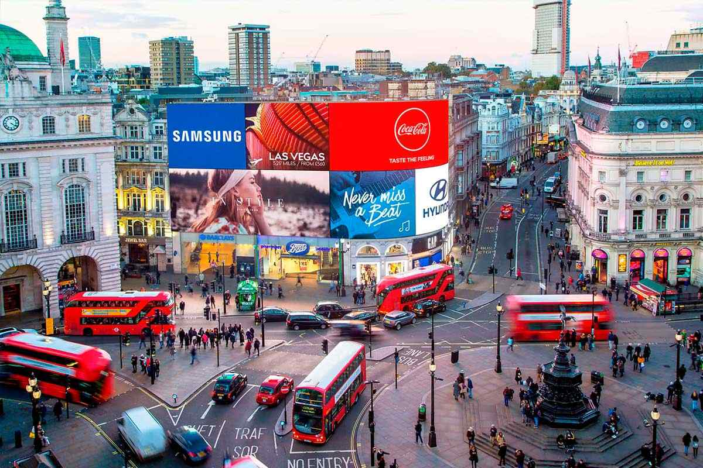
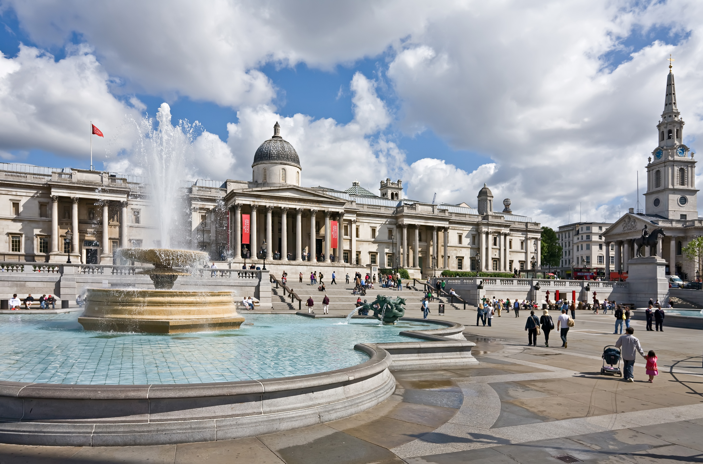
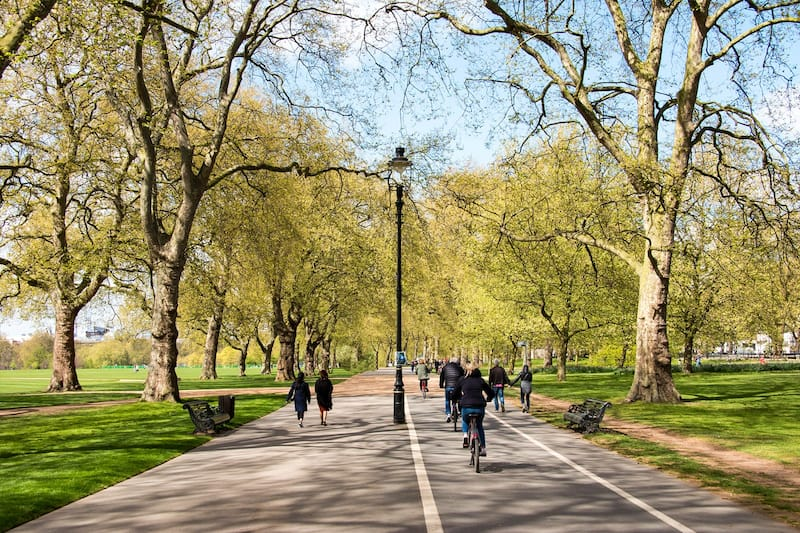

És possible que us estresseu una mica en arribar a Londres ja que us trobareu amb una ciutat plena de monuments i edificis interessants. A més a més, és una ciutat enorme. Però no us preocupeu! A continuació trobareu els 10 llocs més importants de Londres perquè pogueu organitzar les visites sense cap mena de problema!

El Palau de Westminster és un dels primers llocs que heu de visitar, no només per la importància que aquest edifici té per a la vida política del Regne Unit, sinó que, a més a més, és un edifici gòtic victorià preciós que no us deixarà pas indiferents.
A la Torre de Londres, a part de veure les Joies de la Corona, també podreu recórrer els passadissos d'un edifici que durant molt de temps va ser un lloc de violència i de terror però que, avui en dia, és un dels edificis més visitats i estimats de la ciutat.

Sense cap mena de dubte, el pont de la Torre de Londres és un símbol de la ciutat (segurament l'haureu vist en alguna pel·lícula o serie de TV). El Tower Bridge travessa el riu Tàmesis a l'altura de Southwark. Dins seu hi ha una exposició.
Molts turistes viatgen a Londres només per veure el Buckingham Palace, la residència oficial de la reialesa britànica. Aquí hi podem veure el famós canvi de guàrdia. I si el palau en sí ja impressiona, no us podeu perdre el preciós parc Green Park.
Un altre símbol de la ciutat és aquesta nòria, construida l'any 1999 per a rebre el futur. Des del London Eye s'hi pot veure tota la ciutat i els seus voltants.
Aquesta intersecció al centre de Londres està caracteritzada per tenir cartells lluminosos enormes. A una banda trobareu l'animada plaça Leicester Square, el Soho i, molt a prop, Chinatown. És una parada de metro gairebé obligatòria si es viatja a Londres.
A part de ser una de les places més populars de Londres, amb l'imponent monument que ens recorda la victòria de la corona britànica contra els francesos i els espanyols, aquesta plaça es caracteritza per marcar l'inici del SoHo, on es concentra la vida comercial de Londres. A la Trafalgar Square també podràs visitar la Galeria Nacional (National Gallery).
Camden Town ha sigut una àrea residencial des de l'any 1790. Amb el desenvolupament del Grand Union Canal i el transport ferroviari millorat, aquest barri s'ha convertit en una part de Londres imprescindible a visitar. Avui dia, els turistes i els londinencs es reuneixen aquí per buscar tresors en els mercats ambulants de Camden, per passejar pel Regent's Canal, per provar la cuina de tot el món i per escoltar música en directe dins els pubs.

El Museu Britànic destaca per les numeroses exposicions que s'hi fan, que us permetran conèixer dades molt interessants sobre la història de la humanitat. És el museu de les mòmies egípcies!

És un parc molt ampli situat al centre de Londres ple d'arbres i d'esquirols. A la part interior hi ha un gran llac anomenat Serpentine, amb diferents tipus d'aus i amb algunes barques que es poden llogar. En un extrem del parc hi ha el Speaker's Corner, un lloc on es poden fer discursos en públic, una tradició britànica molt curiosa.
I si sou uns fanàtics de Harry Potter... aquí trobareu les principals atraccions turístiques de Londres que no us podeu perdre!